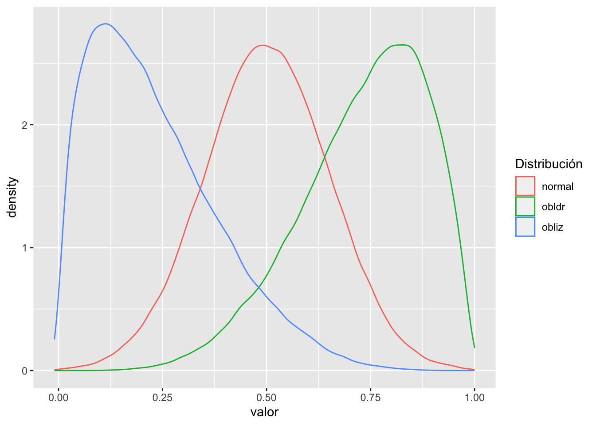
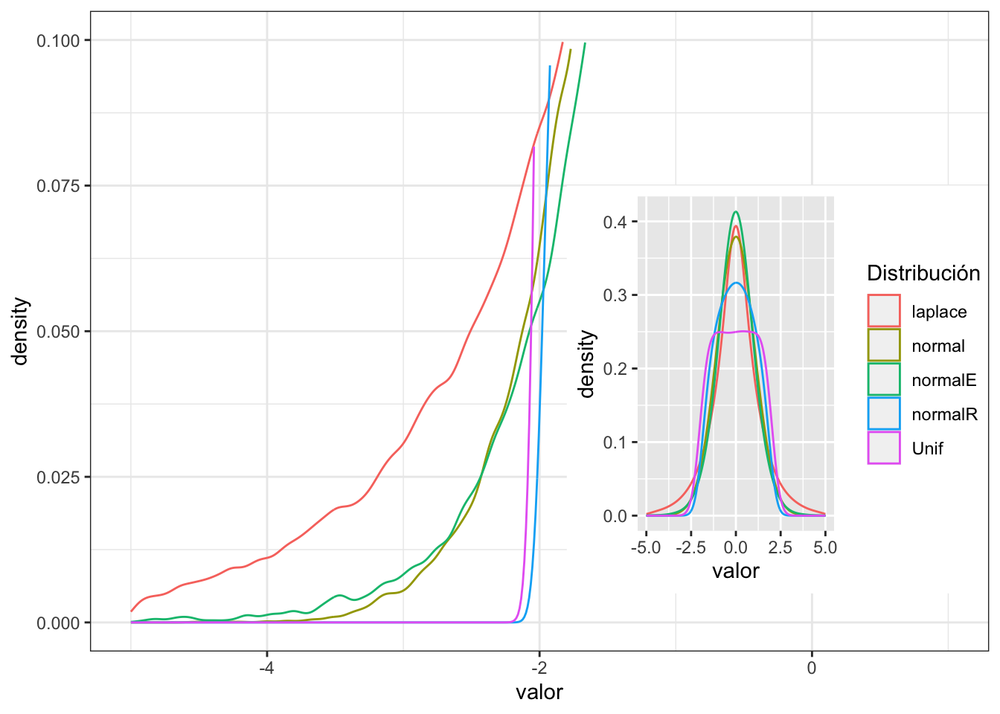
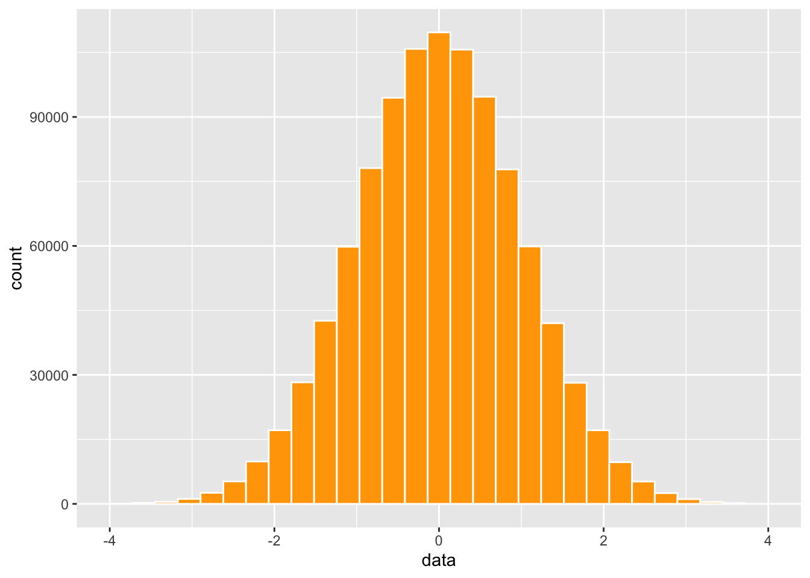

T4a_Estadistica_descriptiva
Fecha de la ultima revisión
## [1] "2023-07-31"

Activar los Paquetes
library(ggplot2) # paquete para visualizar los datos
library(ggversa) # paquete para diferentes conjuntos de datos
library(modeest) # paquete para calcular la moda
library(pastecs) # paquete para análisis tiempo-espacial usado en ecología
library(psych) # paquete para análisis psicométrica, psicológica y de personalidad
library(knitr) # un grupo de función para incluyendo tablas bonitas con kable.
library(tidyverse)
library(gridExtra)
library(e1071)Estadistica descriptiva
En los módulos de “Medidas de Tendencias Central” y “Medidas de Dispersión” se explicó donde proviene estos parámetros y como calcular estos. En este módulo aprenderemos diferentes funciones como calcular estos parámetros individualmente y herramienta como calcular todos y otros parámetros todo juntos.
Los indices que veremos aquí incluye
- el promedio
- la mediana
- la desviación estándar
- el mínimo
- el máximo
- los cuantiles
- el indice Oblicuidad (en ingles “Skewness”)
- el indice de Curtosis ( en ingles “Kurtosis”)
Aqui creamos un conjunto de datos de 100 datos con un promedio de 100 y una desviación estándar de 10. Nota que la función set.seed() es que el comienzo la simulación sea igual a cada vez que se corre, y se el mismo resultado. Esto se añade solamente cuando uno esta enseñando y que los resultados sean consistente.
## x
## 1 102.96467
## 2 89.45503
## 3 104.10506
## 4 96.80085
## 5 107.07817
## 6 109.25101## [1] 98.10404## [1] 9.421761## [1] 72.77799## [1] 123.1338- Quiz 1: Usa R y construye una lista o data frame con los siguientes datos y calcular el promedio. Contesta en MSTeam Form con tu respuesta. 4, 6, 7, 3, 9, 10, 19, 52.
Analisis con muchos datos
Usaremos datos que hemos visto en el modulo Producción de Gráficos.
Se necesita el archivo DownloadFestival que se encuentra debajo la pestaña de Los Datos. El ejemplo proviene de Field et al. (2014).
Una bióloga estaba preocupado por los posibles efectos sobre la salud de los que particpan a un festivales de música. Entonces, un año fue al Download Festival en el Reino Unido (Download Festival UK). Ella midió la higiene del los que participaron al concierto n= 810 durante el festival de 3 días. Cada día intentaba encontrar a todas las personas que censó el primer día. Los valores asignado fueron de 0 a 4 sobre el nivel de limpieza por como olia los participantes
- 0 = hueles como un cadáver.
- 4 = hueles a rosas dulces en un fresco día de primavera
library(readr)
DownloadFestival <- read_csv("Data_files_csv/DownloadFestival.csv")
dlf=DownloadFestival #usamos un nombre más corta para facilitar
head(dlf) # ver las 3 primeras filas## # A tibble: 6 × 5
## ticknumb gender day1 day2 day3
## <dbl> <chr> <dbl> <dbl> <dbl>
## 1 2111 Male 2.64 1.35 1.61
## 2 2229 Female 0.97 1.41 0.29
## 3 2338 Male 0.84 NA NA
## 4 2384 Female 3.03 NA NA
## 5 2401 Female 0.88 0.08 NA
## 6 2405 Male 0.85 NA NARemover los NA del análisis
Con los datos de los participantes al festival como en algunos diá hay participantes donde no tienen los datos se añadió un NA, es estos casos para que el análisis se logra hay que añadir a la función na.rm=TRUE que significa remover la NA. Para dar se cuenta remueve na.rm=TRUE cuando se usa el “día2” o “día3”, y evalúa que pasa.
## [1] 0.9609091## [1] 0.9444949## [1] 0.02## [1] 20.02## [1] 1.79Resumen estadístico de una variable
Para ver los estadístico mencionado arriba (menos la moda, oblicuidad y curtosis) se puede usar la función stat.desc() del paquete pastecs. Para facilitar la lectura de los valores se usa la función “round(x, 3), el tres en esta caso representa la cantidad de valores significativos que se demuestra. Si no usamos round() los valores aparece en notación científicas.
Nota que hay muchos más parámetros calculados. Aparece en la lista en orden el valor mínimo: min(), el valor máximo: max(), la mediana: median, el promedio: mean, la desviación estándar; std.dev entre otros.
## day1
## nbr.val 8.100000e+02
## nbr.null 0.000000e+00
## nbr.na 0.000000e+00
## min 2.000000e-02
## max 2.002000e+01
## range 2.000000e+01
## sum 1.452620e+03
## median 1.790000e+00
## mean 1.793358e+00
## SE.mean 3.318617e-02
## CI.mean.0.95 6.514115e-02
## var 8.920705e-01
## std.dev 9.444949e-01
## coef.var 5.266627e-01## day1
## nbr.val 810.00
## nbr.null 0.00
## nbr.na 0.00
## min 0.02
## max 20.02
## range 20.00
## sum 1452.62
## median 1.79
## mean 1.79
## SE.mean 0.03
## CI.mean.0.95 0.07
## var 0.89
## std.dev 0.94
## coef.var 0.53Resumen Estadístico de multiples variables
Si uno quiere evaluar múltiples variables continua todas juntos se puede usar la misma función pero el componente c() se añade todas las variables de interés.
round(stat.desc(dlf[,c("day1","day2","day3")], basic=FALSE,norm=TRUE), digits=3) # round reduce a 3 valores significativo## day1 day2 day3
## median 1.790 0.790 0.760
## mean 1.793 0.961 0.977
## SE.mean 0.033 0.044 0.064
## CI.mean.0.95 0.065 0.087 0.127
## var 0.892 0.520 0.504
## std.dev 0.944 0.721 0.710
## coef.var 0.527 0.750 0.727
## skewness 8.833 1.083 1.008
## skew.2SE 51.407 3.612 2.309
## kurtosis 168.967 0.755 0.595
## kurt.2SE 492.314 1.265 0.686
## normtest.W 0.654 0.908 0.908
## normtest.p 0.000 0.000 0.000- Quiz 3: Usa R usa el data.frame Camas_Hospital en el paquete ggversa. Contesta en MSTeam Form con tu respuesta. Selecciona la variable Camas que representa el “número de camas por 1000 personas en muchos países. ¿Cual es el rango (range)?
Los Cuantiles
Los cuantiles son los valores a intervalos específicos de una variable aleatoria continua. Los cuantiles son frecuentemente una mejor interpretación de la distribución cuando los valores no tienen una distribución normal. Típicamente, la distribución se divide en 4 partes con las siguientes partes (los cuantiles 0.25, 0.50 = la mediana, 0.75) y se define como cuartiles. Para meas detalle pueden ver el siguiente enlace https://en.wikipedia.org/wiki/Quantile.
En el siguiente ejemplo se demuestra como tulizar la función quantiles y seleccionar los cuantiles deseados con el comopnente de probs=c(x,x,x).
## 5% 10% 25% 50% 75% 95% 99%
## 0.5945 0.8490 1.3125 1.7900 2.2300 2.9100 3.3200Se puede usar también la función describe en el paquete pshych que le da automáticamente estos cuantiles.
## vars n mean sd median trimmed mad min max range skew kurtosis se
## X1 1 810 1.79 0.94 1.79 1.77 0.7 0.02 20.02 20 8.83 168.97 0.03El indice de Oblicuidad: Skewness
El indice de oblicuidad es un indice que describe la simetría en una distribución alrededor de su promedio. Otra manera de describirlo es el tercer momento, por que los datos se poner a un exponente elevado al ^3.
La formula es la siguiente. Lo que se darán cuenta es muy similar a la varianza pero note que las diferencias se poner al ^3. Para meas información vea este enlace https://en.wikipedia.org/wiki/Skewness.
\[\frac{1}{N}\sum_{i=}^N\left(\frac{x_i-\overline{x}}{\sigma}\right)^3\]
Primero voy a crear tres conjuntos de datos
- con distribución normal
- oblicuidad a la izquierda
- oblicuidad a la derecha
normal=rnorm(100000, .5, .15)
obliz=rbeta(100000, 1.5,5)
obldr=rbeta(100000, 5.5,2)
normal=as.tibble(normal)
obliz=as.tibble(obliz)
obldr=as.tibble(obldr)Ahora unimos los data frames y se añade nombres a las columnas
## value value value
## 1 0.5364228 0.06528924 0.3629821
## 2 0.5564006 0.43111848 0.6912106## normal obliz obldr
## 1 0.5364228 0.06528924 0.3629821
## 2 0.5564006 0.43111848 0.6912106El próximo paso es apilar cada columna una sobre la otra. La razón que queremos esto es que deseamos reproducir las variables en un mismo gráfico
library(tidyverse)
df2=df%>%
gather(key = "Distribución", value="valor", c(normal, obliz, obldr))
head(df2, n=3)## Distribución valor
## 1 normal 0.5364228
## 2 normal 0.5564006
## 3 normal 0.4928184Ahora vamos a ver los datos un gráfico. Vemos que la distribución de los datos son muy diferentes, tanto la distribución en azul y verde están sesgado a unos valores y tienen una cola o valores más grande (azul) o pequeños (verde) que si fuese una distribución normal.

Ahora se calcula el indice de oblicuidad y comparamos los valores. Como regla cuando el nivel de oblicuidad esta entre
- -0.5 y 0.5 se considera dentro de una distribución simétrica (normal).
- -1.0 y -0.5 o entre 0.5 y 1.o los valores tienen una oblicuidad moderada.
- Menor de -1.0 o mayor de 1.0 los datos tienen una oblicuidad grande.
Ahora evaluamos la oblicuidad de los tres gráficos. se usa la función de skewness en el paquete e1071
Para los datos de una distribución normal el valor es muy cerca a cero. Para los datos sesgado a la izquierda el indice de oblicuidad es positivo y el sesgado a derecha es negativo.
library(e1071)
e1071::skewness(normal$value) # la oblicuidad de los datos de una distribución normal## [1] -0.01547477## [1] 0.8241298## [1] -0.6517398El indice de Curtosis: Kurtosis
El indice de curtosis es un índice que describe la cola de la una distribución alrededor de su promedio. Otra manera de describirlo es el cuarto momento, por que los datos se poner a un exponente elevado al ^4. El curtosis mide la propensidad de tener daos atípicos.
La formula es la siguiente. Lo que se darán cuenta es muy similar a la varianza pero note que las diferencias se poner al ^4. Para más información vea este enlace https://www.wikiwand.com/en/Kurtosis.
\[\frac{1}{N}\sum_{i=}^N\left(\frac{x_i-\overline{x}}{\sigma}\right)^4\]
Primero voy a crear cuatro conjuntos de datos
- con distribución normal
- con distribución normal, con cola reducida
- con distribución normal, con cola extendida
- distribución uniforme
library(PearsonDS)
library(rmutil)
momentsR=c(mean=0, variance=1, skewness=0, kurtosis=2)
momentsE=c(mean=0, variance=1, skewness=0, kurtosis=4)
normalR=rpearson(100000, moments=momentsR)
normalE=rpearson(100000, moments=momentsE)
Unif=runif(100000, -2,2)
normal=rnorm(100000, 0,1)
laplace=rlaplace(500000, m=0, s=1)
normal=as.tibble(normal)
normalR=as.tibble(normalR)
normalE=as.tibble(normalE)
Unif=as.tibble(Unif)
laplace=as.tibble(laplace)Ahora unimos los data frames y se añade nombres a las columnas
## value value value value value
## 1 0.605010 0.2892615 -0.4822304 0.93391406 1.396762
## 2 -2.032979 0.3275709 1.3826850 -0.01462776 1.793108## normal normalR normalE Unif laplace
## 1 0.605010 0.2892615 -0.4822304 0.93391406 1.396762
## 2 -2.032979 0.3275709 1.3826850 -0.01462776 1.793108El próximo paso es apilar cada columna una sobre la otra. La razón que queremos esto es que deseamos reproducir las variables en un mismo gráfico
library(tidyverse)
df2=df%>%
gather(key = "Distribución", value="valor", c(normal, normalR, normalE, Unif, laplace))
head(df2, n=3)## Distribución valor
## 1 normal 0.6050100
## 2 normal -2.0329791
## 3 normal 0.8411153Ahora vamos a ver los datos en un gráfico. Vemos que la distribución de los datos son muy diferentes, Tiene que concentrar no en el pico de la distribución pero las colas de los datos. Nota la distribución normal que es de color amarillo, y comparar si la colas están por debajo o por encima de esta distribución normal.
Tanto la distribución uniforme (color rosa) y normal reducido (normalR, color azul) las curvas pasan de bajo la curva normal. Al contrarío la linea verde y roja son distribuciones que pasan por encima de la curva normal, entonces las colas son más predominante.
whole=ggplot(df2, (aes(valor, colour=Distribución)))+
geom_density(adjust=5)+
xlim(-5,5)
ggsave("Graficos/curtosis_whole.png")
sub=ggplot(df2, (aes(valor, colour=Distribución)))+
geom_density()+
theme_bw() +
scale_x_continuous(limits=c(-5, 1)) +
scale_y_continuous(limits=c(0, .1)) +
theme(legend.position= "none")
ggsave("Graficos/curtosis.png")
sub + annotation_custom(
ggplotGrob(whole),
xmin = -1.8, xmax = 1.4, ymin = 0.005, ymax = 0.075)
Ahora se calcula el indice de curtosis y comparamos los valores. Como regla el nivel de curtosis esta significativo si los valores de curtosis se enuentra en los siguientes rangos, y se acerca cero no hay curtosis (lo que uno espera para una distribución normal.
- Menor de -1.0 los datos están muy aplanados (Uniforme, normalR).
- Mayor de 1.0 (la distribución de Laplace).
Ahora evaluamos la oblicuidad de los tres gráficos. se usa la función de kurtosis en el paquete e1071
Para los datos de una distribución normal el valor es muy cerca a cero. Para los datos que tienen exceso de cola el valor de curtosis es negativos y cuando el valor de curtosis es positivo hay exceso de datos en la cola.
## [1] 0.02028664## [1] -0.9925722## [1] 0.9990422## [1] -1.202775## [1] 3.023714Quiz 1
Quiz 2
Quiz 3
## data
## 1 -0.8057809
## 2 -0.9316680
## 3 -0.3934976
## 4 -0.6830357
## 5 -0.4068460
## 6 -1.7428742